DATASCI 306
Lecture 18
Power and effect size
Forecasting an election
- It’s election day and New Yorkers are voting for mayor.
- How many voters do I need to survey to have a good chance correctly predicting the outcome? $$ \[\begin{align} H_0 &: p_\text{Mamdani} \leq 0.5 \\ H_a &: p_\text{Mamdani} > 0.5 \end{align}\]
Testing a new website
You graduate a work for a tech firm. Your team has designed a new website layout that they believe will increase user engagement. \[ \begin{align} H_0 &: \text{new engagement} \leq \text{old engagement} \\ H_a &: \text{new engagement} > \text{old engagement} \end{align} \]
Testing a new drug
A pharmaceutical company has developed a new drug to lower blood pressure. They want to test if the new drug is effective: \[ \begin{align} H_0 &: \text{mean BP reduction} \leq 0 \\ H_a &: \text{mean BP reduction} > 0 \end{align} \]
Types of statistical error
- Type I error: I incorrectly reject the null hypothesis (false positive)
- Type II error: I incorrectly fail to reject the null hypothesis (false negative)
Power
- Power: 1 - (Type II error rate), i.e. my ability to correctly reject the null hypothesis when it is false
- Power and Type I error rate are inversely related: as one goes up, the other goes down
Why care about type I error?
- Generally, we set \(H_0\) to be the “status quo” or “no effect”.
- Type I error means we are incorrectly concluding that there is an effect when there is none.
Why care about power?
- If I run an under-powered study, there is no chance of detecting an effect even if one exists.
- This wastes money and also potentially harms people (e.g. if a drug is effective but I fail to detect it).
- That is why e.g. the FDA requires power analyses for clinical trials.
Review of hypothesis testing
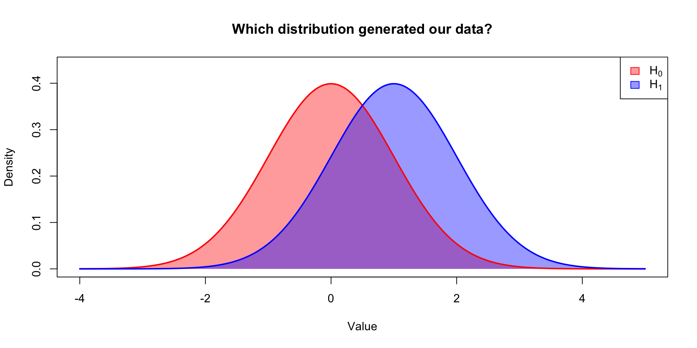
Critical region
- I reject \(H_0\) when my observed data falls in the critical region.
- For a two-sided test with \(\alpha=0.05\), the critical region is the extreme 2.5% tails of the null distribution.
Type-1 error
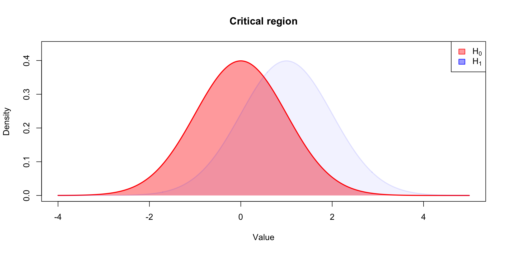
Type-1 error
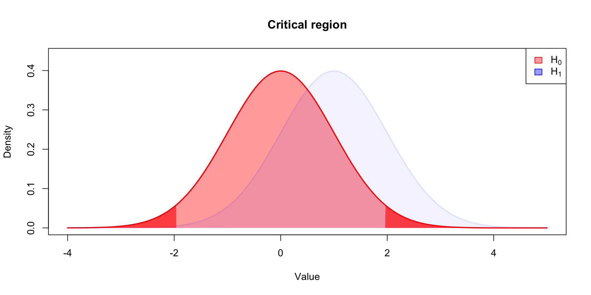
Power
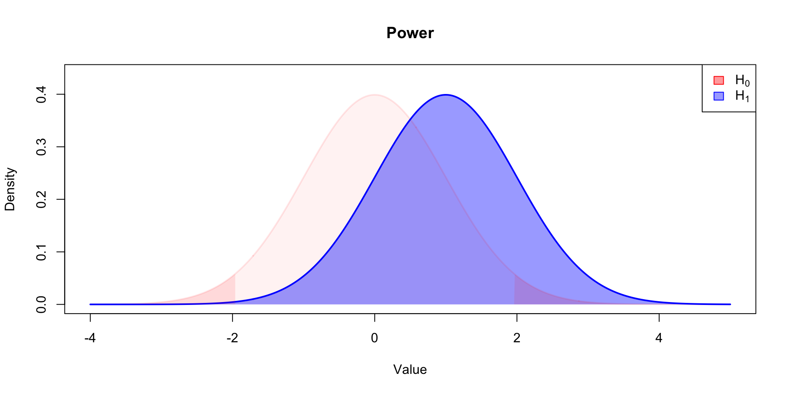
Power
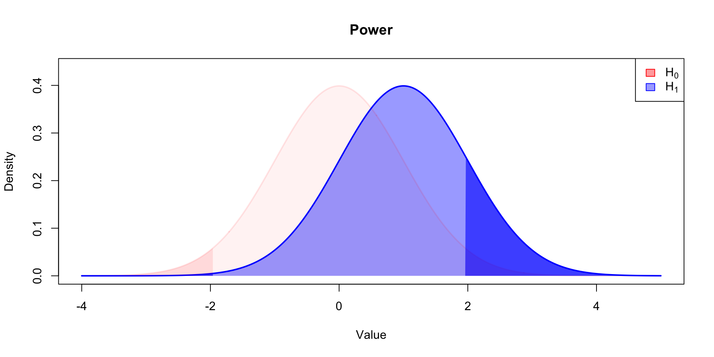
Factors affecting power
There are four main factors that affect power:
- Effect size: larger effects are easier to detect
- Sample size: larger samples give more information
- Significance level (\(\alpha\)): higher \(\alpha\) (i.e. \(\alpha=0.10\) vs \(\alpha=0.05\) increases power)
- Variability in the data: less variability increases power
Visualizing power and type-I error
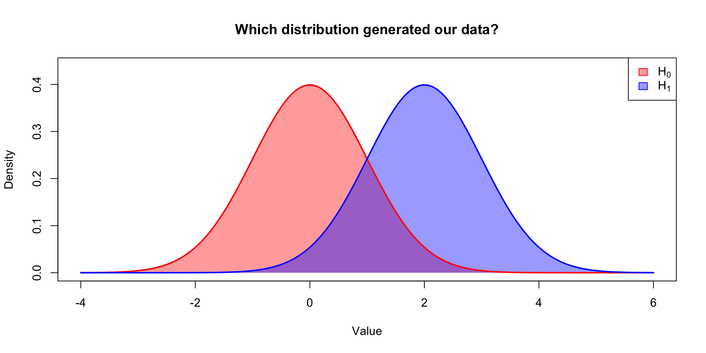
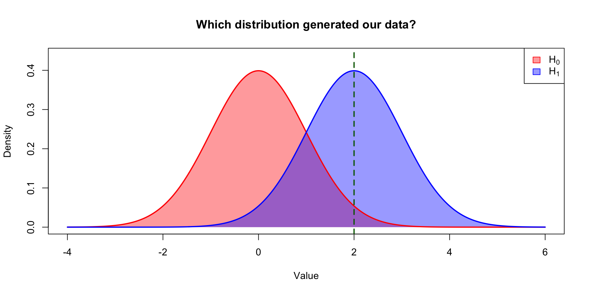
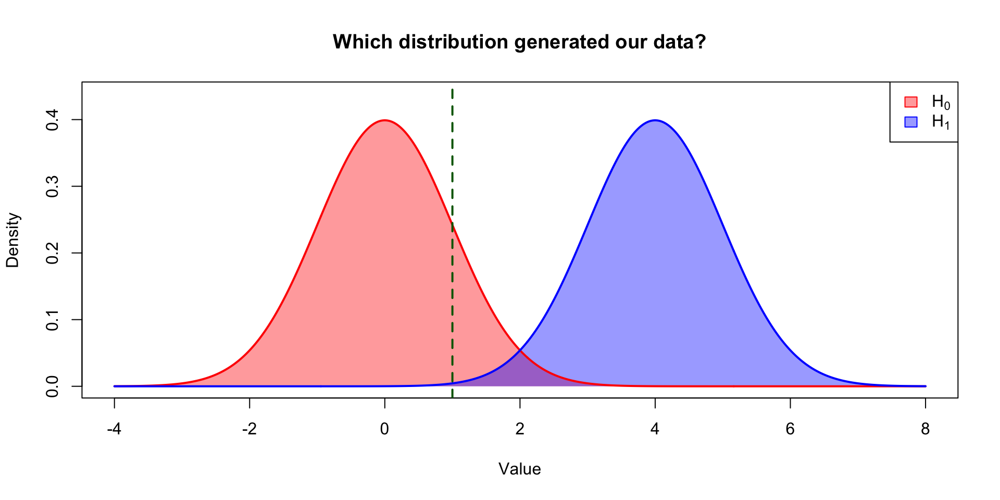
Takeaway
When the effect size gets larger, it becomes easier to distinguish between the null and alternative hypotheses.
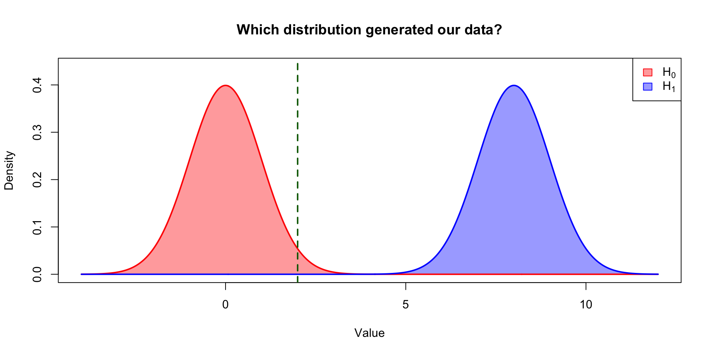
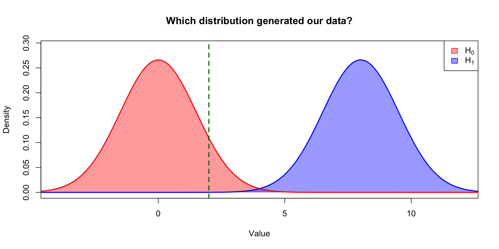
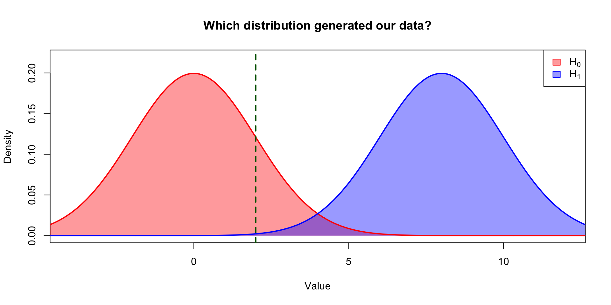
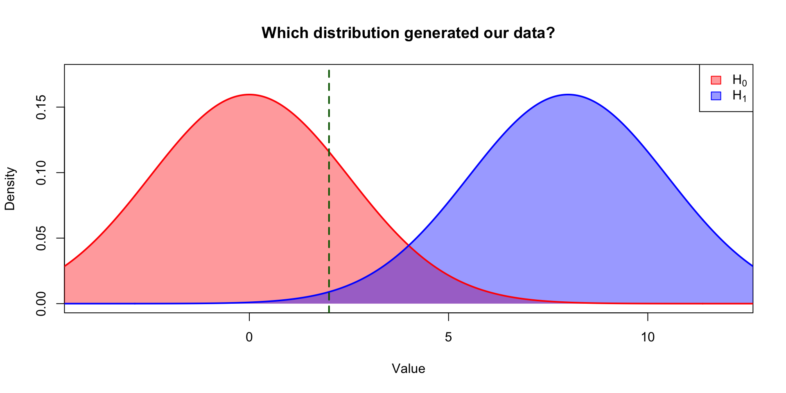
Takeaway
When the variability in the data increases, it becomes harder to distinguish between the null and alternative hypotheses.
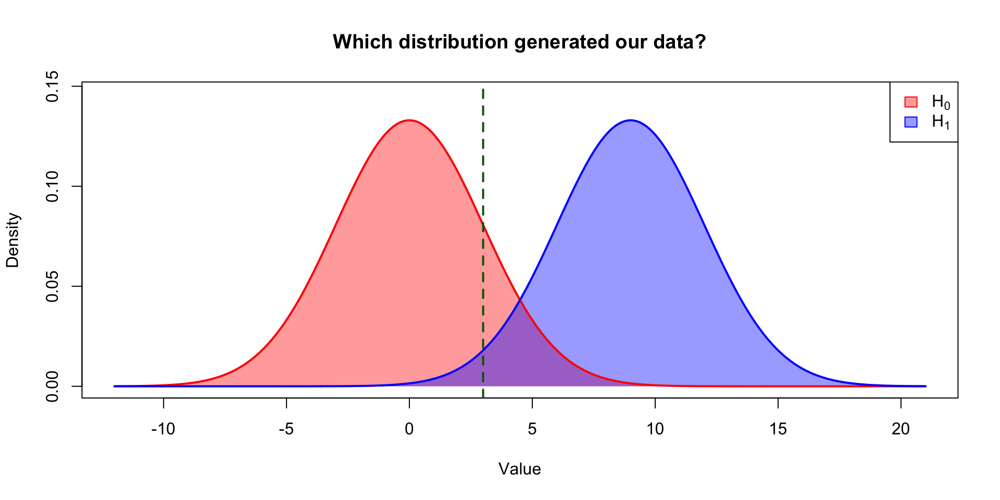
- \(H_0\): mean = 0, sd = 3
- \(H_1\): mean = 9, sd = 3
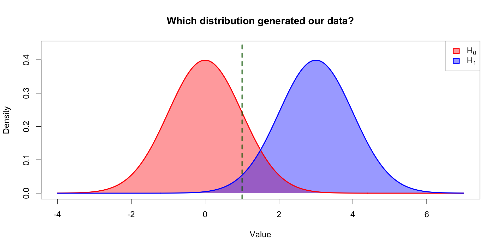
- \(H_0\): mean = 0, sd = 3
- \(H_1\): mean = 9, sd = 3
Takeaway
- What matters is the standard effect size (ratio of effect size to variability), not the absolute effect size or variability alone.
- Related concept, Cohen’s \(d = \frac{|\mu_1 - \mu_2|}{\sigma}\).
\(d=1.0\)

\(d=0.1\)
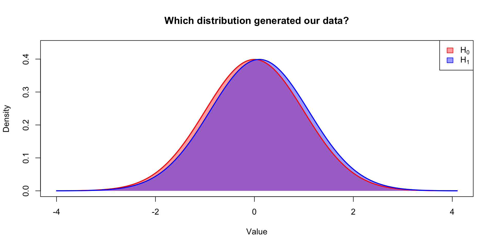
What we have learned
- Standard effect sizes give us a way to compare power across different studies.
- If the standard effect size is very low, we will need a large sample to detect it.
- Otherwise your study is “underpowered”.
Example of an underpowered study
- Study claimed that adopting a “power pose” produced hormonal changes and increased risk-taking behavior.
- Sample size was 42 people (21 per group).
- Claimed effect sizes were very large (Cohen’s \(d\) of 0.8 to 0.9).
- Subsequent studies with larger samples failed to replicate.
Power analysis
- In most psychology experiments \(d\) is low, around 0.1 say.
- What’s the required sample size to detect such an effect with 80% power at \(\alpha=0.05\)?
- (There is a closed-form solution, but first we will use simulations to figure it out.)
Simulations in R
- Simulations are a powerful tool for understanding statistical concepts.
- The basic idea is to generate random data according to some model, and then analyze that data
- By repeating this process many times, we can estimate quantities like power, bias, variance, etc.
Simulating this experiment
- We run an experiment with 42 people, half in treatment and half in control.
- So 21 power posers, 21 normal posers.
- We measure the testosterone level of each person.
- Suppose the true effect size is \(d=0.1\).
Statistical model
- A model is a simplified representation of reality that captures the essential features of a phenomenon.
- Our model is that the control group has mean 0 and sd 1, and the treatment group has mean 0.1 and sd 1.
- (Is this a reasonable model??)
Translate a model into code
First, we need to write a function that simulates a single person’s testoterone level:
Conduct the study
Analyzing the results
Putting it all together
Now we can put everything together into a single function that simulates the entire study:
Estimating power
To estimate power, we need to repeat the study many times and see how often we reject \(H_0: d=0\):
Ingredients for estimating power
Notice that we need to specify three things:
- Sample size (\(n\))
- True effect size (\(p\))
- Number of simulations to run (
n_simulations)
Which of these are under our control? Which of these improve power? Which of these cost money?
Estimating power for different sample sizes
Now we can estimate power for different sample sizes:
Figuring out the required sample size
Now we can plot power as a function of sample size: